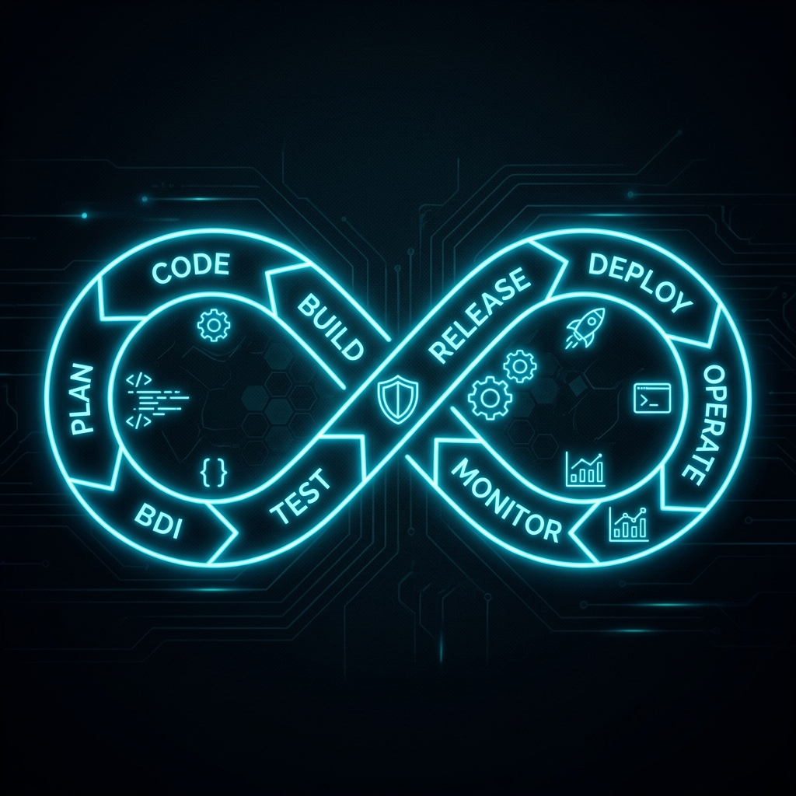
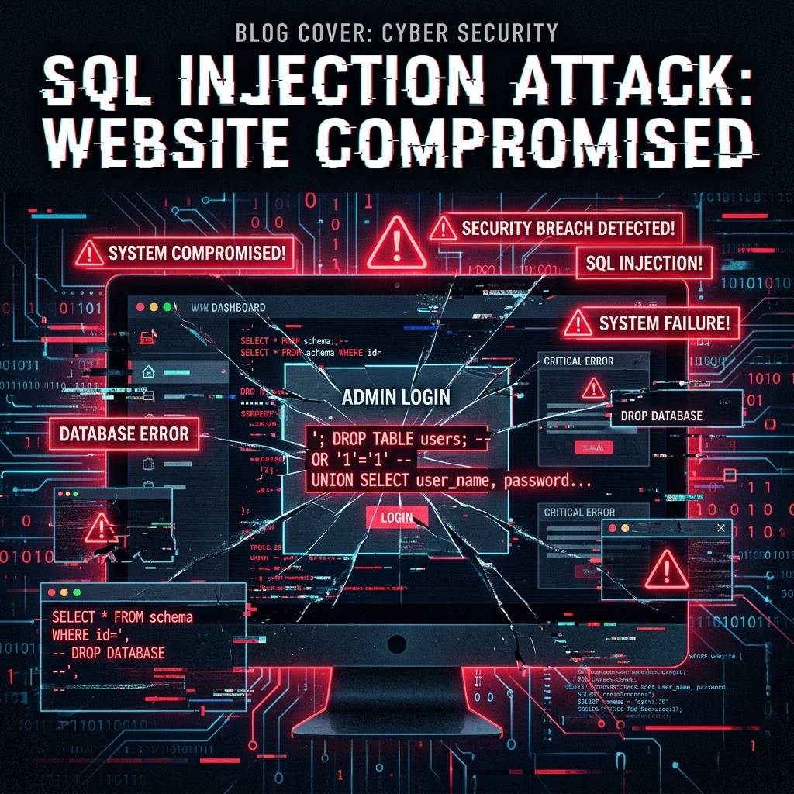

Thoughts on cybersecurity, hacking, AI, and the development world.
It's not about the hoodie. It's about the mindset. Hackers see systems the way architects see buildings — they don't see the pretty facade, they see structural weaknesses. Here's what really drives a hacker's approach.
Think your password is safe? With 10 billion leaked credentials, the math isn't in your favor.
My personal journey from writing frontend code to hunting vulnerabilities and building security tools.
Your starter kit for ethical hacking — no fluff, just the tools that actually matter.
AI is reshaping security. But is it making us safer — or giving attackers a superpower?

Security shouldn't be an afterthought. Here's how to bake it into every stage of your pipeline.

Real-world breaches, real lessons. The attacks that caught companies off guard.
It's not laziness. It's a system problem. And it's costing companies millions.